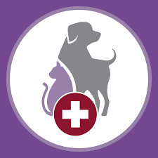
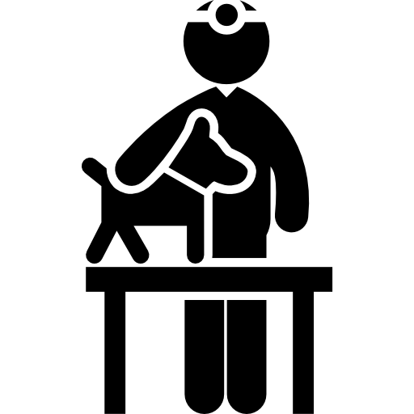

Nuestros servicios

Adopción Responsable
Te ayudaremos a encontrar la mascota perfecta para ti y brindaremos asesoramiento para una adopción responsable.

Cuidado Veterinario
Todas nuestras mascotas reciben atención veterinaria de calidad, incluyendo vacunas, desparasitación y esterilización.

Asesoría Personalizada
Contamos con expertos en adopción de mascotas que te brindarán asesoramiento y responderán tus preguntas.